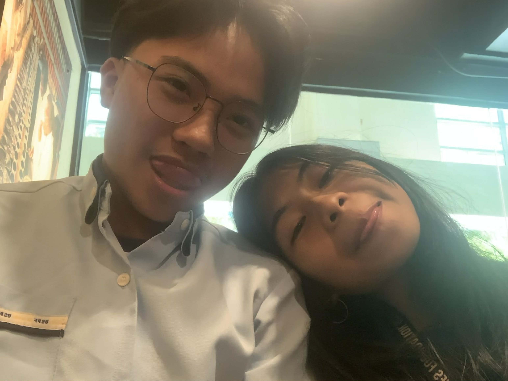
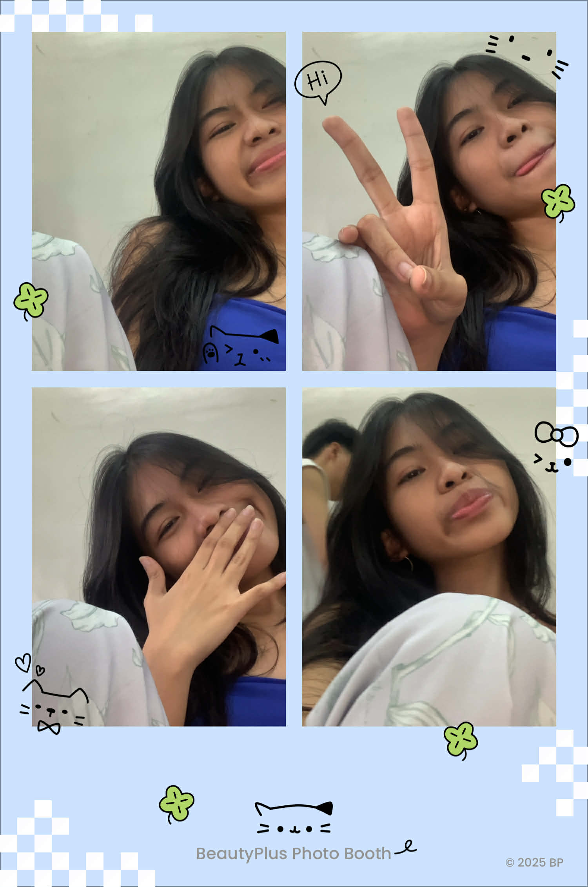
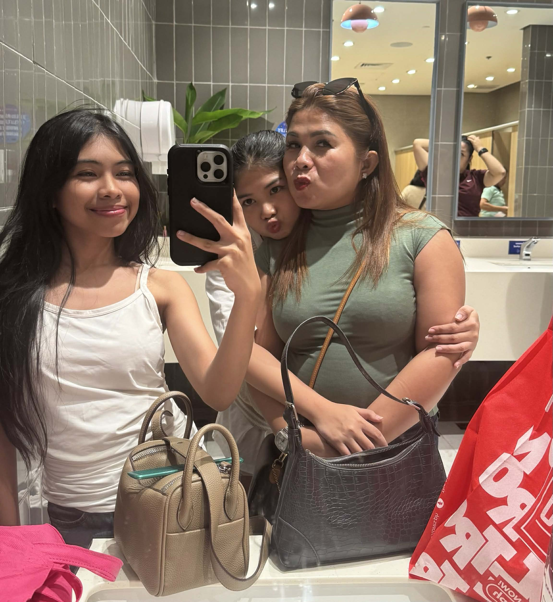
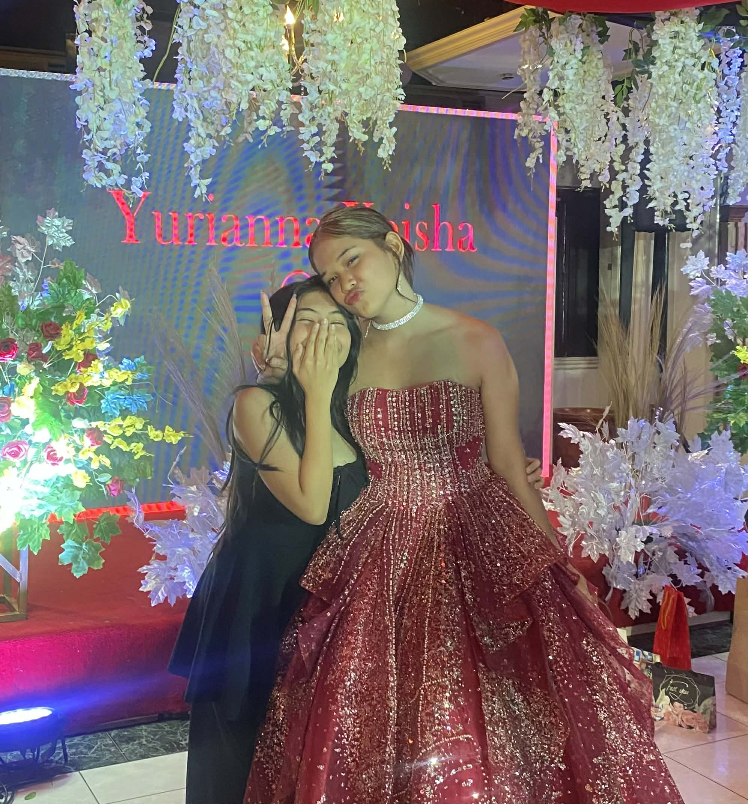
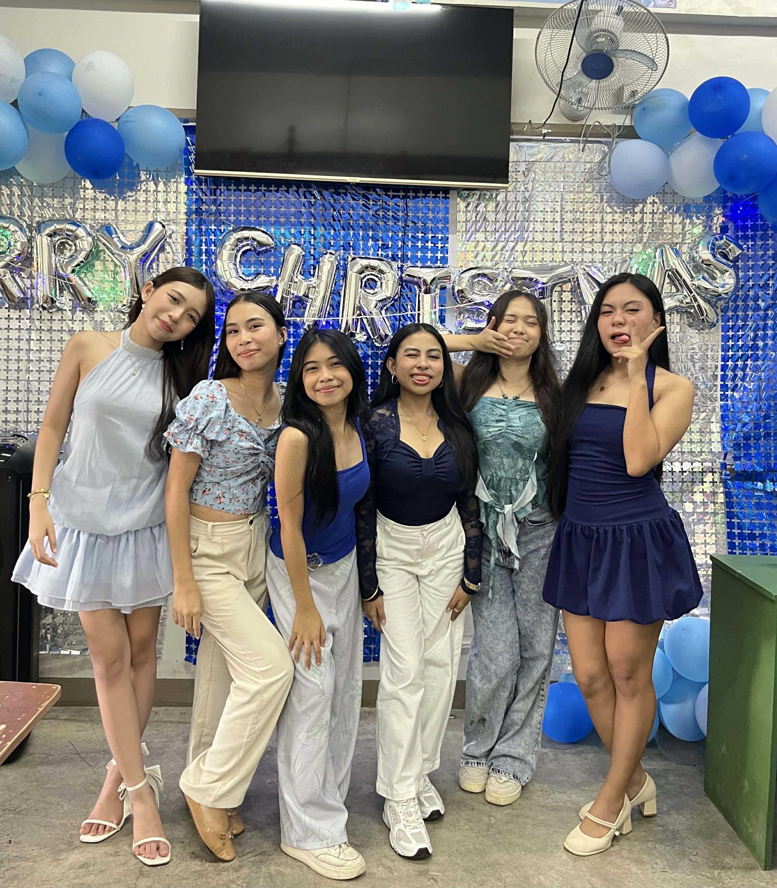

N O T E S A B O U T M Y L I F E

HERES MY BOYFRIEND, I LOVE HIM WITH ALL MY HEART. HES VERYY CARING AND LOVING. I always yap to him ALL THE TIME. HE IS VERY SUNGUGAN AND LOVES TO RAGEBAIT. lami kysha kumotan always ug hapakon, he spoils me a lot basta food and whenever im hungry...ALWAYSS THANKFUL FOR HIM and graetful to have him sm. I love him sm brh

THIS IS ME, Im very uhm OUTGOING yes but I complain a lot if daghan tao ug init kaau. Im a picky eater and mowm would scold me for not eating well but she still loves me yes. IM GONNA BE IN COLLEGE NEXTT YEAR AND TAKING BSIT COURSE. I LOVE MY FRIENDS SO MUCH all my frennies, also to some tht i dont talk much to them na but I hope they are doing well. IM THE YOUNGEST SA AKONG FAM and ako tlga ang pinaka oa. THANKFUL FOR THEM ALWAYS bcs they love me hehe

HERES MY SISTER AND MY MOWM, this was taken recently before my mowm left here sa pinas to work back sa sg na, she was js taking a 1 week vacation. NAA MI SA SM CITY ANI NA TIMA but nyway I LOVE MY SISTER AND MY MOWM bcs oa kyko soafer and maldita and all but they still love me and care for me NYAHAHAHAHAHAH wlang choice. Mowm's been taking care of us 4 for a lot of years nagyd, shes been paying our school tuitons, things, foods, allowance and more. SHE SACRIFICED A LOTT and soon mamawi ko ni mowm. TO MY SISTER, SHES THE BREADWINNER SA AMOA, she earns her own money and spends it wisely. She knows how to manage her self na and she can buy whatever she wants also. IM VERY PROUD OF HER and I love them both so much. I have 2 older brothers and they are annoying but I love them also, snobs.

YEYY HERES YURII, WE'VE BEEN VERY CLOSEE EVER SINCE GR9. I REALLY LOVE HER SO MUCH AND IM SO HAPPY THT I METT MYY SOULMATEE FRENNIIEEEE. Shes been there for me through ups and downs and Ive been also there for her!. WE UNDERSTAND EACH OTHERS HUMORS TLGA AND I JS LOVE HOW I RANDOMLY CHAT HER GOING TO HER HOUSE and mag phone rmi WHAUAHAHAHAHAHHAHAHA. I chat her sometimes sd maki laag ug kalit and mo go rsd sya, EVEN IF DLI NAMI SAME SCHOOL BUT THE SAMEE TREATMENT IS STILL THERE. Im foreverr grateful to have a friend like yuri! LOVE YOU GIRLIE.

YEYY LASTLY TO MY SHS GROUPP FRIENDSS! I love them so much and they also mean a lot to me. IM FOREVER PROUD OF THEM AND CHEERING FOR THEM. SHS life is fun when you have friends fr and im happy that I met these peopel and got closer to them!. ILL CHERISH THEM SM.